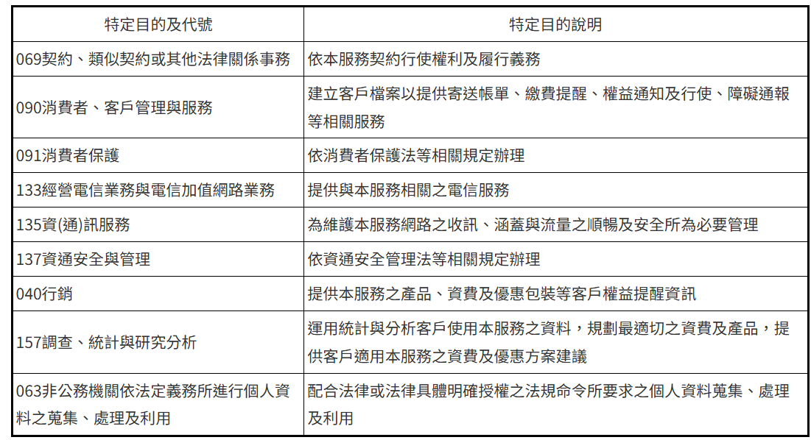

中華電信股份有限公司新北營運處
個人資料蒐集、處理及利用告知聲明
條款版本：v1 最後更新日期：2026-07-01
中華電信股份有限公司（下稱「本公司」，含各分公司、電信研究院及電信學院等）為確保本活動及服務參加者（除另為註明外，亦包含得獎者，以下同）及客戶之權益，特依個人資料保護法（以下簡稱「個資法」）第八條第一項、第九條第一項（如適用）之規定，明確告知您下列事項。當您提供個人資料參與本活動或使用本服務時，表示您已詳閱並同意本告知聲明之內容：
一、本公司蒐集您個人資料之特定目的及說明如下

二、蒐集之個人資料類別
(一) 您提供之資料：包含您之姓名、身分證統一編號、出生年月日、通訊方式、地址等填列於本服務或依法須留存之資料。
(二) 位置資訊：指您使用本服務所可能產生之位置資訊。
(三) 其他服務資訊：為優化本服務及便於您選擇最適合的產品/服務，可能分析您的個人資料，並依分析結果改善和開發我們的產品/提供服務。
三、個人資料處理及利用之期間
(一) 特定目的存續期間：我們會在您使用本服務的期間內處理或利用您的個人資料。
(二) 本服務終止或解除（您不再使用本服務）或活動結束後，相關個人資料之保留期限如下：
1、中華電信股份有限公司：符合《電信管理法》等相關法令規定下，至少保留一年之期限；如涉及中獎開立扣繳憑單者，依稅法規定之期限保存。
2、LINE 官方（LY Corporation）：依據個人資料保護法等相關法規以及隱私權政策，得向尋求與 LINE 相關服務合作的企業/參加者蒐集、處理及利用個人資料，並提供予受委託處理及利用個人資料之台灣連線股份有限公司及其他主辦單位之子公司或關係企業（或受託處理相關事務者），以確保相關服務團隊能即時與您聯繫，此部分資料由 LINE 官方至少保留五年之期限。
四、境外利用地區之限制
除合作夥伴 LINE 官方（LY Corporation）依其官方隱私權政策與跨境傳輸合規聲明所定之利用地區外，本公司營運與利用之個人資料地區僅限台灣本島（含澎湖縣）、金門縣及連江縣等台灣地區利用，且本公司不會將個資移轉至其他境外地區。
五、個人資料處理及利用之對象
(一) 本公司（含受委託處理事務之委外機構）。
(二) 依法令規定得蒐集、處理、利用之機關／構（如：號碼可攜服務集中式資料庫，或內政部移民署、警政署等經中央目的事業主管機關指定之資料庫輔助驗證機關等）。
(三) 您同意之對象（如「第三人行銷個別商議條款」之合作夥伴）。
六、個人資料處理及利用之方式
(一) 為您建立客戶檔案以便我們管理及提供服務。
(二) 由本公司業務承辦人員於辦理活動或服務之特定目的必要範圍內，依通常作業所必要之方式利用此個人資料；另為辦理活動獎項寄送作業，將得獎者提供且為配送所必要之個人資料提供予宅配、貨運或物流業者。
(三) 以您的各項聯繫方式與您業務聯繫，或向您通知與本服務有關之資訊，例如寄送帳單、催繳訊息至您或實際使用本服務之人的地址、電子郵件信箱，或藉由電話聯繫或簡訊通知您有關繳費、催繳之資訊。
(四) 為優化本服務，可能會分析您的個人資料，並依分析結果改善和開發本服務，以提供您適用本服務之方案建議。
(五) 本公司保有修改、變更、暫停、中止、提前終止或取消本活動或服務之權利，如有未盡事宜，本公司對於所有活動及服務內容擁有最終解釋權。
七、您依個資法第三條規定，就我們保有之個人資料得行使之權利及方式
(一) 您得向我們查詢、閱覽我們保有您之個人資料，包含蒐集個資之特定目的、處理及利用以及採行之安全措施，並得請求我們提供前述資料之複製本。但我們依個資法第十四條規定得酌收必要成本費用。
(二) 依個資法第十一條第一項規定，我們應主動或依您之請求補充或更正您的個人資料，惟依個資法施行細則第十九條規定，您應適當釋明其原因及事實。
(三) 依個資法第十一條第二項規定，個人資料正確性有爭議者，我們會主動或依您請求停止處理或利用。但因執行業務所必須，或經您書面同意，並註明其爭議者，不在此限。
(四) 如您認為我們違法蒐集、處理或利用您的個人資料時，依個資法第十一條第四項規定，您得向我們請求刪除、停止蒐集、處理或利用您之個人資料。但我們會檢視是否有違法情形，並答覆您結果。
(五) 當本服務終止或解除後，或您認為我們不再需要您的個人資料時，依個資法第十一條第三項規定，您得向我們請求刪除、停止處理或利用您的個人資料。但我們因執行業務所必須（例如法令已規定保存期限），或另外取得您之書面同意時，仍得保存或繼續處理、利用您的個人資料。
(六) 我們應依您上述請求，就所蒐集之個人資料，答覆查詢、提供閱覽或製給複製本，但如有個資法第十條規定各款情形之一者，不在此限。
八、權利行使與停止行銷之聯絡管道
(一) 您如欲就中華電信保有之個人資料行使個資法第三條規定之各項權利（如查詢、更正、刪除等），可逕洽本公司各服務中心辦理，或撥打客服電話「0800-080-123」（中華市話、行動直撥123）。
九、自由選擇提供個資之權利
您得自由選擇是否提供相關個人資料及類別，惟您於申請本服務時所列的個人資料均為可通知本人之必要欄位，如未正確、完整，可能無法利用本服務，或將無法即時收到與本服務相關的必要資訊。其他個人資料是您在使用本服務的過程中(自動)產生並紀錄，若您不願意我們處理或利用，請依上述權利行使方式辦理。
十、蒐集目的以外的利用
(一) 我們只會在蒐集之特定目的（詳參本告知聲明第一條）必要範圍內，依前述說明利用您的個人資料，惟如有個資法第二十條第一項規定之以下情形，我們將依法為蒐集目的以外之利用：
1、法律明文規定，如依通訊保障及監察法規定提供個人資料予司法警察機關。
2、增進公共利益所必要或為防止他人權益之重大危害。例如依詐欺犯罪危害防制條例規定，為預防／阻止／通報詐欺或網路犯罪等違法行為。
3、為免除您的生命、身體、自由或財產上之危險。例如當您行蹤不明時，將您的位置資訊提供給依法有權得知之第三人。
4、受公務機關或學術研究機構請託，基於公共利益為統計或學術研究而有必要，以無法識別您之形式（詳參本告知聲明第十一條），提供資料給該公務機關或學術研究機構。
5、經您同意。
(二) 蒐集目的以外利用之期間：依相關法令規定之保存期間；或依專案個別磋商（如Google代收服務、Apple代收服務、KKBOX小額付款服務等），就您的個人資料保存所定之保存年限（以期限最長者為準）。
(三) 無從還原識別個人之資料處理及利用：
1、本公司會在客觀上以無還原識別個人之可能方式處理您的個人資料，並使用去識別化或其他資料最小化技術，以統計數據、趨勢分析或其他無法識別身分之形式產出結果後，對外提供給企業客戶、內容提供者，或依法經主管機關許可之創新實驗單位等，作為商業判斷或科技發展的依據(例如：讓內容提供者瞭解消費者之點閱狀況、消費者年齡/性別分布等)。
2、倘您欲停止我們以前述無從還原識別方法，處理及利用您的個人資料，您得依本告知聲明八之聯絡方式，通知我們停止；但您請求停止前，我們已為之利用或處理，或法令另有規定者，不在此限。
十一、我們採用的無從還原識別個人方法說明如下（包含但不限於）
(一) 抑制(Suppression)：移除部分資料以降低資料集的準確性。
(二) 擬匿名化(Pseudonymization)：將原始資料中的唯一識別符以擬匿名資料取代，保留不同資料庫之間的連結，但去除個人資料被識別的可能性。
(三) 泛化(Generalization)：將原始資料修改至較概略的資料，但保留資料的準確性。
(四) 隨機(Randomization)：將原始資料內容修改為接近的資訊，以降低準確性。
(五) 彙集(Aggregation)：將原始資料用其統計數據替代。
十二、相關安全措施
我們就保有個人資料處理及利用所採取相關安全措施與無從還原識別個人方法請詳見本公司網站：中華電信 \ ESG永續 \ 消費者關懷 \ 隱私保護 \ 確保客戶隱私權益（https://www.cht.com.tw/zh-tw/home/cht）。